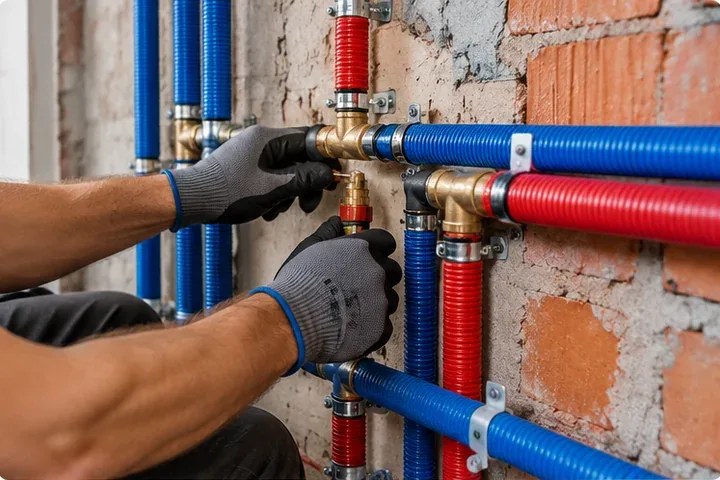

Instalaciones de fontanería
Tuberías de agua fría y caliente, redes de desagüe y saneamiento, termos, calentadores y sistemas de ósmosis. Desde cero o renovando lo que ya tienes.
- Viviendas y reformas
- Obras de mayor tamaño
- Termos, calentadores y ósmosis